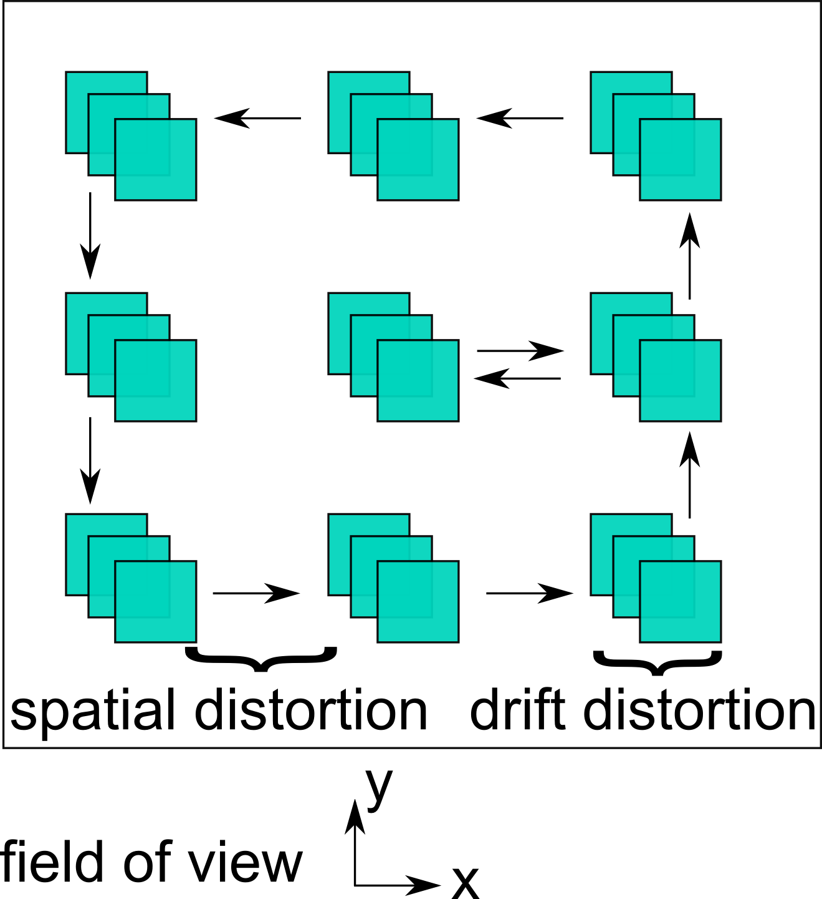
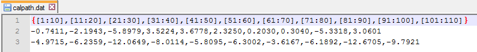

The calibration objective is to remove time-dependent drift distortions and time-independent spatial distortions from the marker positions 'ValidX' and 'ValidY'. The calibration procedure is divided into two parts:
The calibration model considers drift distortions in x- and y-direction 'DriftXDist' and 'DriftYDist' as well as spatial distortions in x- and y-direction 'SpatialXDist' and 'SpatialYDist'. It is established from the uncorrected marker positions 'ValidX', 'ValidY' and the calibration path 'CalPath'. The calibration path results from moving an unloaded sample (without induced strains) in the field of view in x- and y-direction.

The drift distortions are determined from the stationary image sequences at fixed locations in the field of view, while the spatial distortions are determined from the transitions between fixed locations in the field of view (rigid body displacements).
To create the calibration model click the button 'Create calibration' or type 'CreateCalibration;' at the MATLAB command prompt.
You need to provide files for 'ValidX','ValidY' and 'CalPath'.
'ValidX','ValidY' are the results from correlation processing. The calibration path 'CalPath' consists of the stationary image sequences at fixed locations (e.g. from image 1 to 10 written as [1:10]) and the transitions between the fixed locations (e.g. from image 10 to 11). The first line of the file 'calpath.dat' contains the image numbers grouped by stationary image sequences (in brackets []). For the transitions the rigid body displacements in the field of view need to be defined for the x-direction in line 2 and for the y-direction in line 3. The image numbers and displacements must be in agreement (with respect to length) with the ones in the image file list 'filenamelist.mat' that was used to create the marker positions 'ValidX' and 'ValidY'.

The calibration model is saved to 'driftxdist.dat','driftydist.dat','spatialxdist.dat' and 'spatialydist.dat'. Images of the corrected and uncorrected displacement fields in x- and y-direction are stored (*.png files with prefix 'cal_') together with a log file 'cal_calibrationresults.log' that contains statistical information about the corrected and uncorrected displacement fields.
To apply the calibration model click the button 'Apply calibration' or type 'ApplyCalibration;' at the MATLAB command prompt.
The calibration model can be applied to
Again, you have to provide the files 'validx.dat','validy.dat' and 'calpath.dat' and specify where the corrected marker positions should be saved. Images of the corrected and uncorrected displacement fields are stored (*.png files with prefix 'applycal_') together with a log file 'applycal_calibrationresults.log' that contains statistical information about the corrected and uncorrected displacement fields.